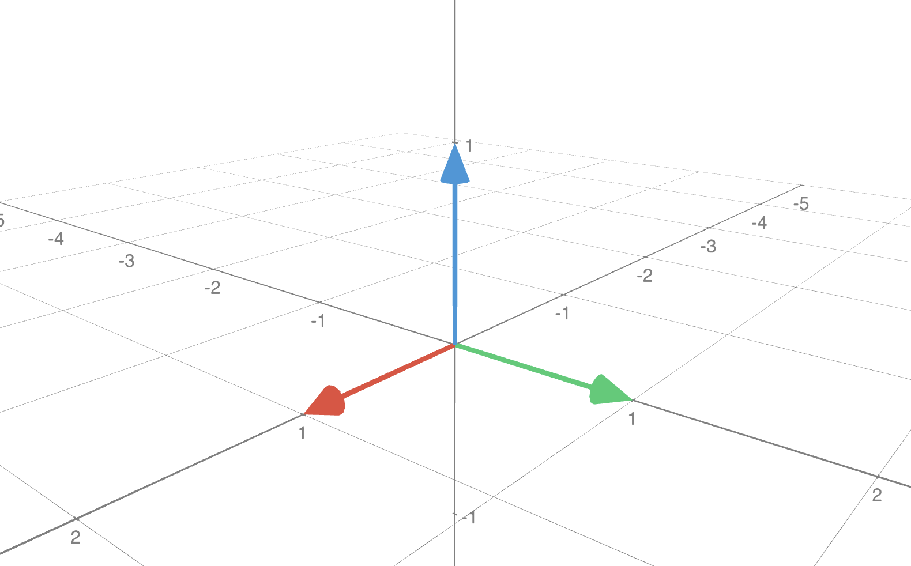
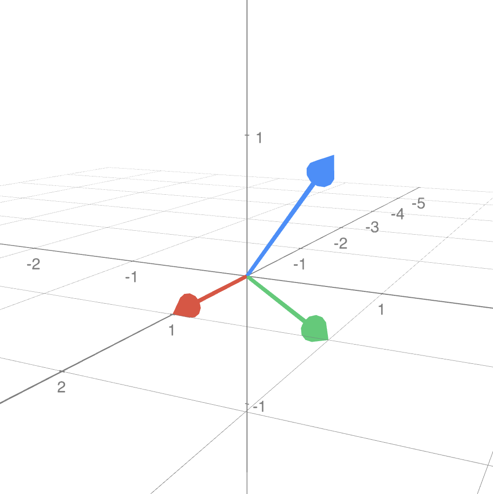
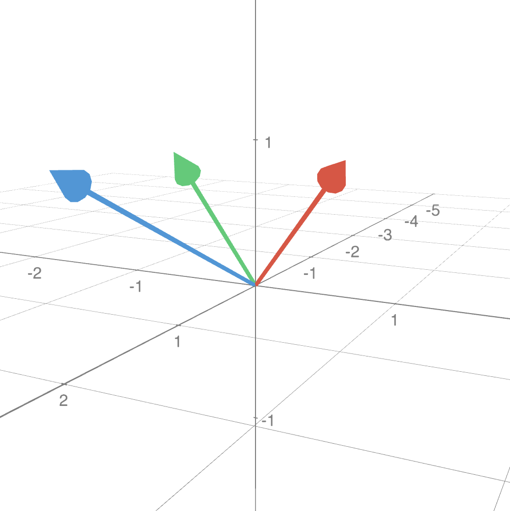

Linear Algebra & Applications
2201NSC
Vector Spaces

Applying Our Ideas More Broadly
We have seen that there is a broad range of linear maps $\mathcal{L}(x)$ satisfying:
$\mathcal{L}($ $ \alpha x + \beta y $ $)$ $= \alpha \mathcal{L}(x) + \beta \mathcal{L}(y) $
Examples of Linear Maps:
- Matrix Multiplication: $A\left(\alpha \mathbf x + \beta \mathbf y\right) $ $= \alpha A\mathbf x + \beta A\mathbf y$
- Differentiation: $\dfrac{d}{dx}\big(\alpha f(x) + \beta g(x)\big)$ $= \alpha \dfrac{df}{dx} + \beta \dfrac{dg}{dx}$
- Integration: $\ds \int\big(\alpha f(x) + \beta g(x)\big)dx $ $\ds = \alpha \int f(x)\,dx + \beta \int g(x)\,dx$
Applying Our Ideas More Broadly
We have seen that there is a broad range of linear maps $\mathcal{L}(x)$ satisfying:
$\mathcal{L}($ $ \alpha x + \beta y $ $)$ $= \alpha \mathcal{L}(x) + \beta \mathcal{L}(y) $
Examples of Linear Maps:
- Matrix Multiplication: $A\left(\alpha \mathbf x + \beta \mathbf y\right) $ $= \alpha A\mathbf x + \beta A\mathbf y$
- Differentiation: $\dfrac{d}{dx}\big(\alpha f(x) + \beta g(x)\big)$ $= \alpha \dfrac{df}{dx} + \beta \dfrac{dg}{dx}$
- Integration: $\ds \int\big(\alpha f(x) + \beta g(x)\big)dx $ $\ds = \alpha \int f(x)\,dx + \beta \int g(x)\,dx$
- We have developed a lot of theory for matrix problems $A\mathbf x = \mathbf b$
- Can we apply our ideas to problems involving other linear maps?
- What conditions do we require for our ideas to work more broadly?
Linearity & Vector Spaces
We have seen that there is a broad range of linear maps $\mathcal{L}(x)$ satisfying:
$\mathcal{L}($ $ \alpha x + \beta y $ $)$ $= \alpha \mathcal{L}(x) + \beta \mathcal{L}(y) $
- $\alpha x + \beta y$ must always exist for any scalars $\alpha, \beta$ and elements $x, y$.
- The usual algebraic rules (commutativity, associativity, etc.) must apply.
👉 Any set of objects obeying these rules is called a vector space.
Why "Vector Space"?
Any point in 3D space can be written as a vector of coefficients: $$ \mathbf{c} = (c_1, c_2, c_3) = c_1 \mathbf{i} + c_2 \mathbf{j} + c_3 \mathbf{k} $$
We can maintain this coefficient representation for completely different mathematical objects using another basis $\{\mathbf{v}_1, \mathbf{v}_2, \mathbf{v}_3\}$:
For polynomials of degree $\le 2$:
$$ p(x)= c_1 + c_2 x + c_3 x^2 \iff (c_1, c_2, c_3) $$This provides a unified framework to analyze vectors, matrices, and functions.
What is a Vector Space?
A vector space is a collection of objects (vectors) equipped with:
- A notion of vector addition
- A notion of scalar multiplication
Closure Properties:
- Adding two vectors produces another vector in the space.
- Rescaling a vector produces another vector in the space.
Addition and scalar multiplication obey the 'usual' rules:
- Associativity, commutativity, distributivity, identity, inverse.
- Rules obeyed by vectors, matrices, and functions.
Formal Definition of a Vector Space
A real vector space $V$ is a nonempty set, with a notion of addition and a notion of scalar multiplication, whose elements satisfy the following axioms for any $\mathbf x,\mathbf y,\mathbf z \in V$ and $\alpha,\beta \in \mathbb{R}$:
- $\mathbf{x} + \mathbf{y} \in V$ (Closure under addition)
- $\alpha\mathbf{x} \in V$ (Closure under scalar mult.)
- $\mathbf{x} + \mathbf{y} = \mathbf{y} + \mathbf{x}$ (Commutativity)
- $(\mathbf{x}+\mathbf{y})+\mathbf{z} = \mathbf{x}+(\mathbf{y}+\mathbf{z})$ (Associativity)
- $\mathbf{x} + \mathbf{0} = \mathbf{x}$ (Additive identity)
- Each $\mathbf{x}$ has an element $-\mathbf{x}$ such that $\mathbf{x} + (-\mathbf{x}) = \mathbf{0}$ (Additive inverse)
- $\alpha(\mathbf{x}+\mathbf{y}) = \alpha\mathbf{x} + \alpha\mathbf{y}$ (Distributivity over vector addition)
- $(\alpha+\beta)\mathbf{x} = \alpha\mathbf{x} + \beta\mathbf{x}$ (Distributivity over scalar addition)
- $(\alpha\beta)\mathbf{x} = \alpha(\beta\mathbf{x})$ (Scalar associativity)
- $1\mathbf{x} = \mathbf{x}$ (Multiplicative identity)
Examples of Vector Spaces
The following sets form vector spaces under standard addition and scalar multiplication:
- Euclidean Spaces: $\mathbb R,$ $\mathbb{R}^2,$ $\mathbb{R}^3, \dots, \mathbb{R}^n$
- Matrix Spaces: $m \times n$ real matrices ($\mathbb{R}^{m \times n}$)
- Function Spaces: All functions defined on a given domain, e.g., $f \colon [0, 1] \to \mathbb{R}$
Example 1: $\mathbb R^n$ - Euclidean spaces
Identify elements of the set: $$\mathbb R^n = \big\{ \mathbf x = \left( x_1, x_2, \ldots , x_n\right)~|~ x_1, x_2, \ldots , x_n \in \mathbb R \big\}$$
Properties 1 & 2. Check for closure of addition and scalar multiplication: $$\mathbf x+ \mathbf y = \left( x_1+y_1, x_2+y_2, \ldots , x_n+y_n\right)$$ $$\;\,k \, \mathbf x = \left( kx_1, kx_2, \ldots , kx_n\right)$$
Property 5. Identify the vector zero: $\mathbf 0 = \left( 0, 0, \ldots , 0\right)$
Property 6. Identify the inverse additive: $ - \mathbf x = \left( -x_1, -x_2, \ldots , -x_n\right)$
Example 1: $\mathbb R^n$ - Euclidean spaces
Identify elements of the set: $$\mathbb R^n = \big\{ \mathbf x = \left( x_1, x_2, \ldots , x_n\right)~|~ x_1, x_2, \ldots , x_n \in \mathbb R \big\}$$
Properties 1 & 2. Check for closure of addition and scalar multiplication: $$\mathbf x+ \mathbf y = \left( x_1+y_1, x_2+y_2, \ldots , x_n+y_n\right)$$ $$\;\,k \, \mathbf x = \left( kx_1, kx_2, \ldots , kx_n\right)$$
Property 5. Identify the vector zero: $\mathbf 0 = \left( 0, 0, \ldots , 0\right)$
Property 6. Identify the inverse additive: $ - \mathbf x = \left( -x_1, -x_2, \ldots , -x_n\right)$
Now you can continue checking that the other properties hold. 📝
Remark: This is just an strategy you can use. But if you prefer, you can verify each property one by one in the given order, that is, from 1 to 10.
Example 2: $\R^{m\times n}$ - set of $m\times n$ matrices
$\R^{m\times n} = \left\{ \left( \begin{array}{ccc} a_{11} & \cdots & a_{1n} \\ \vdots & \ddots & \vdots \\ a_{m1} & \cdots & a_{mn} \\ \end{array} \right) ~\Bigg|~ a_{ij}\in \R, 1\leq i\leq m, 1\leq j\leq n \right\}$ $=M_{mn}\big(\mathbb R\big)$
Prop. 1. & 2. Closure of addition and scalar multiplication: Usual addition and scalar multiplication for matrices.
Prop. 5. Identify the vector zero: $\;\mathbf 0 = \left( \begin{array}{ccc} 0 & \cdots & 0 \\ \vdots & \ddots & \vdots \\ 0 & \cdots & 0 \\ \end{array} \right)$
Prop. 6. Identify the inverse additive: $\;- \mathbf x = \left( \begin{array}{ccc} -a_{11} & \cdots & -a_{1n} \\ \vdots & \ddots & \vdots \\ -a_{m1} & \cdots & -a_{mn} \\ \end{array} \right)$
Example 3: $C[a,b]$ - set of continuous real-valued functions on $[a,b]$
$\mathbf f, \mathbf g\in C[a,b],$ often represented as $f(x), g(x).$
Prop. 1 & 2. Closure of addition and scalar multiplication:
$\quad \left(\,f+g\right)(x) = f(x) + g(x)$ $\quad \text{and} \quad (k \cdot f)(x) = kf(x)$
Prop. 5. Identify the vector zero:
$\mathbf 0 = \,?\;$ 🤔
$\mathbf 0 = f(x) \equiv 0$ for every $x\in[a,b].$ 😃
Prop. 6. Identify the inverse additive: $ - \mathbf f = -f(x) $
Example 4: $P_n\big(\R\big)$ - set of polynomials of degree $\lt n$
$\mathbf p \in P_n\big(\R\big)$, with $\mathbf p = a_0 + a_1x + \cdots + a_{n-1} x^{n-1}$ and $a_k\in \R,$ $\forall k.$
Prop. 1 & 2. Closure of addition and scalar multiplication: Operations similar to Example 3.
$\quad \left(p+q\right)(x) = p(x) + q(x)$ $\quad \text{and} \quad (k p)(x) = kp(x)$
Prop. 5. Identify the vector zero:
$\mathbf 0 = \,?\;$ 🤔
$\mathbf 0 = p(x) \equiv 0$ for every $x\in\R.$ 😃
Prop. 6. Identify the inverse additive: $ - \mathbf p = -p(x) $
Question!
Consider the set of solutions of the homogeneous linear ODE
$y'' + p(x)y' + q(x)y = 0,\, $ where $\,y=y(x)$.
Is this set a vector space?

💡 Hint: Think back to Examples 3 and 4.
What happens when we add two solutions or multiply a solution by a scalar?
Superposition principle: If $y_1$ and $y_2$ are solutions, then $c_1y_1+c_2y_2$ is also a solution.
Subspaces
To show a subset $S \subseteq V$ is itself a vector space, we only need to verify closure.
Definition: A non-empty subset $S \subseteq V$ is a subspace of $V$ if:
- $\alpha \,\mathbf x \in S$ whenever $\mathbf x \in S$ and $\alpha \in \mathbb{R}$
- $\mathbf x + \mathbf y \in S$ whenever $\mathbf x \in S$ and $\mathbf y \in S$
Note: A subspace is a complete vector space in its own right.
Subspace Example
Let $S = \left\{\mathbf x \in \mathbb{R}^3 \mid x_3 = 0\right\}$ be a subset of $\R^3$ $(S\subset \R^3)$.
For any $\mathbf x, \mathbf y\in S$ and $\alpha\in \R$:
1. Closure under addition:
$\mathbf x+\mathbf y $ $= (x_1, x_2, 0) + (y_1, y_2, 0) $ $= (x_1+y_1, x_2+y_2, 0)$ $ \in S$
2. Closure under scalar multiplication:
$\alpha \,\mathbf x $ $= \alpha (x_1, x_2, 0) $ $= (\alpha x_1, \alpha x_2, 0) $ $ \in S$
Hence $S$ is a subspace of $\mathbb{R}^3$ ✅
Non-Subspace Example
Let $S = \left\{\mathbf x \in \mathbb{R}^3 \mid x_3 = 1\right\}$ be a subset of $\R^3$ $(S\subset \R^3)$.
For any $\mathbf x, \mathbf y\in S$ and $\alpha\in \R$:
1. Closure under addition:
$\mathbf x+\mathbf y $ $= (x_1, x_2, 1) + (y_1, y_2, 1) $ $= (x_1+y_1, x_2+y_2, 2)$ $ \notin S$
2. Closure under scalar multiplication:
$\alpha \,\mathbf x $ $= \alpha (x_1, x_2, 1) $ $= (\alpha x_1, \alpha x_2, \alpha) $ $ \notin S$
Hence $S$ is not a subspace of $\mathbb{R}^3$
Subspace Example: $2\times 2$ Matrices
Let $S$ be the set of $2\times 2$ matrices where $x_{21} = -x_{12}$.
For any $A, B\in S$ and $\alpha\in \R$:
1. Closure under addition:
$\begin{pmatrix}x_{11} & x_{12}\\ -x_{12} & x_{22}\end{pmatrix} + \begin{pmatrix}y_{11} & y_{12}\\ -y_{12} & y_{22}\end{pmatrix} $ $= \begin{pmatrix}x_{11}+y_{11} & x_{12}+y_{12}\\ -(x_{12}+y_{12}) & x_{22}+y_{22}\end{pmatrix} $ $ \in S $
2. Closure under scalar multiplication:
$\alpha \begin{pmatrix}x_{11} & x_{12}\\ -x_{12} & x_{22}\end{pmatrix} $ $= \begin{pmatrix}\alpha x_{11} & \alpha x_{12}\\ -(\alpha x_{12}) & \alpha x_{22}\end{pmatrix} $ $ \in S $
Hence $S$ is a subspace of $\,\mathbb{R}^{2\times 2}$
The Null Space of a Matrix
Definition: The null space $N(A)$ of $A \in \mathbb{R}^{m\times n}$ is the set of all solutions to the homogeneous system $A\mathbf x = \mathbf 0.$ That is, $$N(A) = \left\{\mathbf x \in \mathbb{R}^n \mid A\mathbf x = \mathbf 0\right\}.$$
Proof that $N(A)$ is a subspace of $\mathbb{R}^n$:
- The zero solution always exists, so $N(A)$ is not empty: $ \mathbf{0} \in N(A)$.
-
If $\mathbf x,\mathbf y \in N(A)$, then $\mathbf x+\mathbf y \in N(A)$:
$ A(\mathbf x+\mathbf y) $ $ = A\mathbf x + A\mathbf y $ $ =\mathbf 0 + \mathbf 0 = \mathbf 0 $
-
If $\mathbf x \in N(A)$, then $\alpha \mathbf x \in N(A)$:
$ A(\alpha \mathbf x) $ $ = \alpha (A\mathbf x) $ $ = \alpha ( \mathbf 0) = \mathbf 0 $
Finding the Null Space
Find $N(A)$ for $A = \begin{pmatrix}1 & 1 & 1 & 0 \\ 2 & 1 & 0 & 1\end{pmatrix}$
Augmented matrix: $\; \left(\begin{array}{cccc|c}1 & 1 & 1 & 0 & 0\\ 2 & 1 & 0 & 1 & 0\end{array}\right)$ $ \rightarrow \left(\begin{array}{cccc|c}1 & 0 & -1 & 1 & 0\\ 0 & 1 & 2 & -1 & 0\end{array}\right) $
From which we obtain: $ \;\;\left\{ \begin{array}{l} x_1 -x_3 +x_4 = 0 \\ x_2 + 2x_3 - x_4 = 0 \end{array}\right.\;\; $ $ \Ra\;\;\left\{ \begin{array}{l} x_1 = x_3 -x_4 \\ x_2 =- 2x_3 + x_4 \end{array}\right. $
Set as free variables $x_3 = \alpha$, $x_4 = \beta ,\,$ then $\, x_1 = \alpha - \beta, \; x_2 = -2\alpha + \beta$:
$ \mathbf x = \begin{pmatrix}x_1 \\ x_2 \\ x_3 \\ x_4\end{pmatrix} $ $ = \begin{pmatrix}\alpha -\beta \\ -2\alpha + \beta \\ \alpha \\ \beta\end{pmatrix} $ $ = \alpha \begin{pmatrix}1 \\ -2 \\ 1 \\ 0\end{pmatrix} + \beta \begin{pmatrix}-1 \\ 1 \\ 0 \\ 1\end{pmatrix} $
Null Space Subspace Structure
Denote $\mathbf v_1 = \begin{pmatrix}1 \\ -2 \\ 1 \\ 0\end{pmatrix}$ and $\mathbf v_2 = \begin{pmatrix}-1 \\ 1 \\ 0 \\ 1\end{pmatrix}$ $\Ra N(A) = \big\{\alpha \mathbf v_1 + \beta \mathbf v_2 \mid \alpha, \beta \in \mathbb{R}\big\} $
For $\mathbf x, \mathbf y \in N(A)$, then $\mathbf x = \alpha_1 \mathbf v_1 + \beta_1 \mathbf v_2$ and $\mathbf y = \alpha_2 \mathbf v_1 + \beta_2 \mathbf v_2$:
$ \mathbf x+\mathbf y =\alpha_1 \mathbf v_1 + \beta_1 \mathbf v_2 + \alpha_2 \mathbf v_1 + \beta_2 \mathbf v_2$ $ = \left(\alpha_1+\alpha_2\right)\mathbf v_1 + \left(\beta_1+\beta_2\right)\mathbf v_2 $ $ \in N(A) $
For $k\in \R,\;$ $k\, \mathbf x = k \left(\alpha_1 \mathbf v_1 + \beta_1 \mathbf v_2\right)$ $= \left(k \alpha_1\right) \mathbf v_1 +\left(k \beta_1\right) \mathbf v_2$ $\in N(A)$
Therefore $N(A)$ is a subspace of $\mathbb{R}^4$!
Solutions via Null Space
Theorem: If $\mathbf{x}_p$ is a solution to $A\mathbf x = \mathbf b$, then the set of all solutions is $$\big\{\mathbf{x}_p + \mathbf{y} \mid \mathbf{y} \in N(A)\big\}.$$
Proof: Let $\mathbf{x}_p$ be a solution of $A\mathbf{x} = \mathbf{b}$ and let $\mathbf{y} \in N(A)$.
$\Ra\,A(\mathbf{x}_p+\mathbf{y}) = A\mathbf{x}_p + A\mathbf{y}$ $= \mathbf{b} + \mathbf{0}$ $= \mathbf{b}$.
For any other solution $\mathbf{z}$ where $A\mathbf{z} = \mathbf{b}$:
$A(\mathbf{z}-\mathbf{x}_p)$ $= A\mathbf{z} - A\mathbf{x}_p$ $= \mathbf{b} - \mathbf{b}$ $= \mathbf{0}$ $\implies (\mathbf{z}-\mathbf{x}_p) \in N(A)$.
In other words, $\,\mathbf{z}-\mathbf{x}_p = \mathbf{y}$ for some $\mathbf{y}\in N(A)$.
Therefore $\mathbf{z} = \mathbf{x}_p + \mathbf{y}$ for some $\mathbf{y}\in N(A)$. $\blacksquare$
Solving $A\mathbf x =\mathbf b$ with Null Space
Consider the system $\begin{pmatrix}1 & 1 & 1 & 0\\ 2 & 1 & 0 & 0\end{pmatrix}\mathbf x = \begin{pmatrix}2\\ 3\end{pmatrix}.$
First find a particular solution: $\mathbf x_p = (1, 1, 0, 0)^T$
$\begin{pmatrix}1 & 1 & 1 & 0\\ 2 & 1 & 0 & 0\end{pmatrix}\mathbf x_p = \begin{pmatrix}2\\ 3\end{pmatrix}$
Full solution: Particular solution + Null space elements
$\mathbf x = \begin{pmatrix}1\\ 1\\ 0\\ 0\end{pmatrix} $ $+\, \alpha \begin{pmatrix}1\\ -2\\ 1\\ 0\end{pmatrix} + \beta \begin{pmatrix}-1\\ 1\\ 0\\ 1\end{pmatrix}, \quad \alpha,\beta \in \mathbb{R} $
Linear Homogeneous ODEs
A linear homogeneous ODE can be written as $L\left[f\right] = 0.$
Here $L$ is a map of $f$ that returns a linear combination of $f$ and its derivatives.
💡 Example: $\;L\left[f\right] = f'' + 3f' + 2f = 0$
Differentiation is a linear transformation, so $L\left[f\right]$ is a linear map of $f.$
⭐️ Solutions form the null space $N(L)$ of the linear operator $L$ ⭐️
🤔 How do we use this result in practice? (e.g. to solve $f'' + 3f' + 2f= g$)
General ODE Solution Strategy:
- Find a particular solution $f_p$ to $L[f] = g$.
- Find homogeneous solutions $f_h \in N(L)$ (solutions for $L[f]=0$).
- General solution is $f = f_p + f_h$.
Bases Revisited
A basis allows us to express any vector in our space as a linear combination:
$ \mathbf v = c_1 \mathbf v_1 + c_2 \mathbf v_2 + \dots + c_n \mathbf v_n $
This provides a general representation for vectors in $\mathbb{R}^n$.
Next Goal: Extend these ideas to general vector spaces without knowing a priori how many basis vectors are needed for:
- Subspaces of $\mathbb{R}^n$
- Matrix spaces and function spaces
Spanning
Definition: Let $\mathbf v_1, \mathbf v_2, \dots, \mathbf v_n$ be vectors in a vector space $V$. The set of all linear combinations $$ \alpha_1 \mathbf v_1 + \alpha_2 \mathbf v_2 + \dots + \alpha_n \mathbf v_n $$ is called the span of $\mathbf v_1, \mathbf v_2, \dots, \mathbf v_n,$ denoted $\text{Span}(\mathbf v_1, \mathbf v_2, \dots, \mathbf v_n)$.
Definition: The set $\{\mathbf v_1, \mathbf v_2, \dots, \mathbf v_n\}$ of vectors in $V$ is a spanning set for $V$ if and only if every vector $\mathbf v \in V$ can be written as a linear combination of $\mathbf v_1, \mathbf v_2, \dots, \mathbf v_n$: $$ \mathbf v = \alpha_1 \mathbf v_1 + \alpha_2 \mathbf v_2 + \dots + \alpha_n \mathbf v_n \quad \forall \mathbf v \in V $$
A spanning set of vectors
$\left\{\mathbf v_1=(-3,1)^{T}, \mathbf v_2=(1,3)^{T}\right\}$ $\rightarrow \,\mathbf v= \alpha_1\mathbf v_1 +\alpha_2\mathbf v_2$
Proving Vectors Span a Space - Example 1
Do the vectors $\mathbf v_1 = \begin{pmatrix}1\\2\\4\end{pmatrix},$ $\mathbf v_2 = \begin{pmatrix}2\\1\\3\end{pmatrix},$ and $\mathbf v_3 = \begin{pmatrix}0\\0\\1\end{pmatrix}$ span $\mathbb{R}^3$?
We check if scalars $\alpha_1, \alpha_2, \alpha_3$ exist such that: $$ \alpha_1 \mathbf v_1 + \alpha_2 \mathbf v_2 + \alpha_3 \mathbf v_3 = \mathbf x, \;\, \text{for any} \;\, \mathbf x = \begin{pmatrix}x \\ y \\ z\end{pmatrix} \in \mathbb{R}^3 $$
Express this as a matrix system:
$ \begin{pmatrix}1 & 2 & 0 \\ 2 & 1 & 0 \\ 4 & 3 & 1\end{pmatrix} \begin{pmatrix}\alpha_1 \\ \alpha_2 \\ \alpha_3\end{pmatrix} = \begin{pmatrix}x \\ y \\ z\end{pmatrix} $ $\,\rightarrow \,A \mathbf{\alpha} = \mathbf{x}$
Proving Vectors Span a Space - Example 1
$ \begin{pmatrix}1 & 2 & 0 \\ 2 & 1 & 0 \\ 4 & 3 & 1\end{pmatrix} \begin{pmatrix}\alpha_1 \\ \alpha_2 \\ \alpha_3\end{pmatrix} = \begin{pmatrix}x \\ y \\ z\end{pmatrix} $ $\,\rightarrow \,A \mathbf{\alpha} = \mathbf{x}$
$\det(A) $ $= 1(1 - 0) - 2(2 - 0) $ $= -3 \neq 0$ $ \implies A^{-1}$ exists!
$ \begin{pmatrix}\alpha_1 \\ \alpha_2 \\ \alpha_3\end{pmatrix} = A^{-1}\begin{pmatrix}x \\ y \\ z\end{pmatrix} $ $= \dfrac{1}{3}\begin{pmatrix}-1 & 2 & 0 \\ 2 & -1 & 0 \\ -2 & -5 & 3\end{pmatrix}\begin{pmatrix}x \\ y \\ z\end{pmatrix}$
Since unique coefficients $\alpha_i$ exist for any $x, y, z$, the vectors span $\mathbb{R}^3$.
The set $\,\left\{\mathbf v_1, \mathbf v_2, \mathbf v_3\right\}\,$ spans $\,\R^3$
Proving Functions Span a Space - Example 2
Do the polynomials $\mathbf v_1 = 1 - x^2$, $\mathbf v_2 = x + 2$, and $\mathbf v_3 = x^2$ span $P_3$?
We check if $\alpha_1, \alpha_2, \alpha_3$ exist for any $ax^2 + bx + c$:
$ \alpha_1\left(1-x^2\right) + \alpha_2\left(x+2\right) + \alpha_3 x^2 = ax^2 + bx + c $
Re-arranging $ \rightarrow \,\left(\alpha_3 - \alpha_1\right)\color{red}{x^2} + \alpha_2 \color{red}{x} + \left(\alpha_1 + 2\alpha_2\right)(\color{red}{1}) = ax^2 + bx + c \qquad\qquad\qquad$
Matrix representation:
$ \begin{pmatrix}-1 & 0 & 1 \\ 0 & 1 & 0 \\ 1 & 2 & 0\end{pmatrix} \begin{pmatrix}\alpha_1 \\ \alpha_2 \\ \alpha_3\end{pmatrix} = \begin{pmatrix}a \\ b \\ c\end{pmatrix} $ $\,\rightarrow \,A \mathbf{\alpha} = \mathbf{k}$
Proving Functions Span a Space - Example 2
$ \begin{pmatrix}-1 & 0 & 1 \\ 0 & 1 & 0 \\ 1 & 2 & 0\end{pmatrix} \begin{pmatrix}\alpha_1 \\ \alpha_2 \\ \alpha_3\end{pmatrix} = \begin{pmatrix}a \\ b \\ c\end{pmatrix} $ $\,\rightarrow \,A \mathbf{\alpha} = \mathbf{k}$
$\det(A) $ $=1(0 - 1) $ $= -1 \neq 0$ $ \implies A^{-1}$ exists!
$$ \begin{pmatrix}\alpha_1 \\ \alpha_2 \\ \alpha_3\end{pmatrix} = A^{-1}\begin{pmatrix}a \\ b \\ c\end{pmatrix} = \begin{pmatrix}0 & -2 & 1 \\ 0 & 1 & 0 \\ 1 & -2 & 1\end{pmatrix}\begin{pmatrix}a \\ b \\ c\end{pmatrix} $$
Since coefficients $\alpha_i$ exist for any $a, b, c,$ these polynomials span $P_3$.
Bases: Minimal Spanning Sets
Definition (Basis): The vectors $\mathbf v_1, \mathbf v_2, \dots, \mathbf v_n$ in a vector space $V$ form a basis for $V$ if and only if:
- $\mathbf v_1, \mathbf v_2, \dots, \mathbf v_n\,$ are linearly independent.
- $\mathbf v_1, \mathbf v_2, \dots, \mathbf v_n\,$ span $\,V$.
Basis Example
Standard Basis for $\mathbb{R}^3$: $\; \left\{ e_1 = \begin{pmatrix}1\\0\\0\end{pmatrix}, \; e_2 = \begin{pmatrix}0\\1\\0\end{pmatrix}, \; e_3 = \begin{pmatrix}0\\0\\1\end{pmatrix} \right\} $
👉 These vectors are linearly independent and span all of $\mathbb{R}^3$.

Alternative Bases for $\mathbb{R}^3$
Other valid bases for $\mathbb{R}^3$ include:
| $\left\{ \begin{pmatrix}1\\0\\0\end{pmatrix}, \begin{pmatrix}1\\1\\0\end{pmatrix}, \begin{pmatrix}1\\1\\1\end{pmatrix} \right\}$ | or | $ \left\{ \begin{pmatrix}1\\1\\1\end{pmatrix}, \begin{pmatrix}1\\0\\1\end{pmatrix}, \begin{pmatrix}2\\0\\1\end{pmatrix} \right\}$ |
|
 |
 |
Alternative Bases for $\mathbb{R}^3$
Other valid bases for $\mathbb{R}^3$ include:
| $\left\{ \begin{pmatrix}1\\0\\0\end{pmatrix}, \begin{pmatrix}1\\1\\0\end{pmatrix}, \begin{pmatrix}1\\1\\1\end{pmatrix} \right\}$ | or | $ \left\{ \begin{pmatrix}1\\1\\1\end{pmatrix}, \begin{pmatrix}1\\0\\1\end{pmatrix}, \begin{pmatrix}2\\0\\1\end{pmatrix} \right\}$ |
👉 Both sets span $\R^3 $
Remark 1: Only two vectors, e.g., $\left\{ \begin{pmatrix}1\\1\\1\end{pmatrix}, \begin{pmatrix}1\\0\\1\end{pmatrix} \right\}$, will not be enough to span $\mathbb{R}^3$.
Remark 2: Four vectors in $\mathbb{R}^3$ cannot be linearly independent:
$ \left\{ \begin{pmatrix}1\\0\\0\end{pmatrix}, \begin{pmatrix}0\\1\\0\end{pmatrix}, \begin{pmatrix}0\\0\\1\end{pmatrix}, \begin{pmatrix}1\\0\\1\end{pmatrix} \right\} $
Null Space Basis
Recall that the null space $N(A)$ of $A \in \mathbb{R}^{m\times n}$ is the set of all solutions to the homogeneous system $A\mathbf x = \mathbf 0.$ That is, $$N(A) = \left\{\mathbf x \in \mathbb{R}^n \mid A\mathbf x = 0\right\}.$$
Now consider the matrix $\,A = \begin{pmatrix}1 & 1 & 1 & 0 \\ 2 & 1 & 0 & 1\end{pmatrix}.$
Null Space Basis for $A$:
The set $\,\left\{ \begin{pmatrix}1\\-2\\1\\0\end{pmatrix}, \begin{pmatrix}-1\\1\\0\\1\end{pmatrix} \right\}\,$ forms a basis for $N(A)$.
Standard Bases for Matrices & Polynomials
Standard Basis for $2\times 2$ Matrices (i.e. $\mathbb{R}^{2\times 2}$):
$$ \left\{ E_{11}=\begin{pmatrix}1&0\\0&0\end{pmatrix}, \; E_{12}=\begin{pmatrix}0&1\\0&0\end{pmatrix}, \; E_{21}=\begin{pmatrix}0&0\\1&0\end{pmatrix}, \; E_{22}=\begin{pmatrix}0&0\\0&1\end{pmatrix} \right\} $$
Standard Basis for Polynomial Space $P_n$ is the set
$ \left\{1, x, x^2, \dots, x^{n-1}\right\} $
Important Results on Bases
- If $\{\mathbf v_1, \dots, \mathbf v_n\}$ spans $V,\,$ then any subset of $V$ with more than $n$ vectors is linearly dependent.
- If both $\{\mathbf v_1, \dots, \mathbf v_n\}$ and $\{\mathbf u_1, \dots, \mathbf u_m\}$ are bases for $V,\,$ then $n = m.$
-
If $\{\mathbf v_1, \dots, \mathbf v_n\}$ is a basis for $V,\,$
each vector $\mathbf v \in V$ is a unique
linear combination of $\mathbf v_j$:
$\ds \mathbf v = \sum_{j=1}^n c_j \mathbf v_j $
Dimension
All bases for a vector space contain the exact same number of vectors.
Definition (Dimension of a vector space): The dimension of a vector space $V$ is the number of non-zero vectors in any of its bases.
Examples
-
Euclidean space $\R^3$:
$\dim\left(\mathbb{R}^3\right) = 3$, since its standard basis has 3 elements. -
Matrix Space $\mathbb{R}^{2\times 2}$:
Basis has 4 elements $\implies \dim\left(\mathbb{R}^{2\times 2}\right) = 4$.
👉 $\, \left\{ \mathbf e_1=(1,0,0)^T, \mathbf e_2=(0,1,0)^T,\mathbf e_3=(0,0,1)^T \right\} $
👉 $\, \left\{ \mathbf e_1=(1,0,0)^T, \mathbf e_2=(0,1,0)^T,\mathbf e_3=(0,0,1)^T \right\} $
👉 $\,\; \left\{ E_{11}=\begin{pmatrix}1&0\\0&0\end{pmatrix}, \; E_{12}=\begin{pmatrix}0&1\\0&0\end{pmatrix}, \; E_{21}=\begin{pmatrix}0&0\\1&0\end{pmatrix}, \; E_{22}=\begin{pmatrix}0&0\\0&1\end{pmatrix} \right\} $
More Examples
-
Euclidean space $\R^3$:
$\dim\left(\mathbb{R}^3\right) = 3$, since its standard basis has 3 elements. -
Matrix Space $\mathbb{R}^{2\times 2}$:
Basis has 4 elements $\implies \dim\left(\mathbb{R}^{2\times 2}\right) = 4$. -
Polynomial Space $P_4$ (degree $\lt 4$):
Basis is $\{1, x, x^2, x^3\} \implies \dim\left(P_4\right) = 4$. -
Continuous Function Space $C[0,1]$:
Basis contains infinitely many polynomial terms $\{1, x, x^2, \dots\}$ $ \Ra \dim\left(C[0,1]\right)=\infty$
Changing Bases Outside Point Spaces
Write $x^2 + 2$ in terms of the basis $\left\{1-x^2, \; x+2, \; x^2\right\}$:
$ c_1(1-x^2) + c_2(x+2) + c_3(x^2) = x^2 + 2 $
Re-arranging: $\; (c_3 - c_1)x^2 + c_2 x + (c_1 + 2c_2) = x^2 + 2 \qquad \qquad \quad$
$ \begin{pmatrix}-1 & 0 & 1 \\ 0 & 1 & 0 \\ 1 & 2 & 0\end{pmatrix} \begin{pmatrix}c_1 \\ c_2 \\ c_3\end{pmatrix} = \begin{pmatrix}1 \\ 0 \\ 2\end{pmatrix} $ $\;\Ra \;\begin{pmatrix}c_1 \\ c_2 \\ c_3\end{pmatrix} = \begin{pmatrix}-1 & 0 & 1 \\ 0 & 1 & 0 \\ 1 & 2 & 0\end{pmatrix}^{-1} \begin{pmatrix}1 \\ 0 \\ 2\end{pmatrix}$
Thus $\; \begin{pmatrix}c_1 \\ c_2 \\ c_3\end{pmatrix} = \begin{pmatrix}0 & -2 & 1 \\ 0 & 1 & 0 \\ 1 & -2 & 1\end{pmatrix} \begin{pmatrix}1 \\ 0 \\ 2\end{pmatrix} = \begin{pmatrix}2 \\ 0 \\ 3\end{pmatrix} $
Check: $2\left(1-x^2\right) + 3\left(x^2\right) $ $= 2 - 2x^2 + 3x^2 $ $= x^2 + 2 \; $ ✅
Column and Row Spaces
Returning to the matrix system
$A \mathbf x = \mathbf b$
where $\;A\in \R^{m\times n}, \,\mathbf x\in \R^n,\,$ and $\,\mathbf b\in \R^m $
Definition: The column space of a matrix $A \in \mathbb{R}^{m \times n}$ is the subspace of $\mathbb{R}^m$ spanned by the columns of $A.$
Definition: The row space of a matrix $A \in \mathbb{R}^{m \times n}$ is the subspace of $\mathbb{R}^n$ spanned by the rows of $A$.
Column & Row Spaces: Examples
Consider matrix $A = \begin{pmatrix}1 & 0 & 1 \\ 0 & 1 & 1\end{pmatrix}$:
Column Space: Set of all linear combinations of columns:
$ \alpha_1 \begin{pmatrix}1\\0\end{pmatrix} + \alpha_2 \begin{pmatrix}0\\1\end{pmatrix} + \alpha_3 \begin{pmatrix}1\\1\end{pmatrix} $ $ = \begin{pmatrix}\alpha_1 + \alpha_3 \\ \alpha_2 + \alpha_3\end{pmatrix} $
👉 $\text{Column Space of } A = \{\mathbf y : \mathbf y = A\mathbf x \,\text{ for any }\, \mathbf x\}$
Row Space: Set of all linear combinations of rows:
$ \alpha_1 \begin{pmatrix}1 & 0 & 1\end{pmatrix} + \alpha_2 \begin{pmatrix}0 & 1 & 1\end{pmatrix} $ $ = \begin{pmatrix}\alpha_1 & \alpha_2 & \alpha_1 + \alpha_2\end{pmatrix} $
👉 $\text{Row Space of } A = \{\overrightarrow{\mathbf y} :\overrightarrow{\mathbf y} = \overrightarrow{\mathbf x}\,A \,\text{ for any }\, \mathbf x\}$
Consistency & Invertibility Results
- A linear system $A \mathbf x = \mathbf b$ is consistent for all $\mathbf b \in \mathbb{R}^m$ if and only if the column space of $A$ is $\mathbb{R}^m$.
-
An $n \times n$ matrix $A$ is invertible
if and only if its column vectors form a
basis for $\mathbb{R}^n$.
Invertible $\iff$ $A\mathbf x=\mathbf b$ has a unique solution for every $\mathbf b\in\mathbb{R}^n$.
$\iff$ columns of $A$ span $\mathbb{R}^n$ and are linearly independent.
Rank and Nullity
Let $A\in \R^{m\times n}.$
Rank of $A$:
- Is the dimension of its row space.
- Is, equivalently, the dimension of its column space.
- Equals the number of non-zero rows in its reduced row echelon form.
- Equals the number of lead variables in its reduced row echelon form.
Nullity of $A$:
- Is the dimension of its null space.
- Equals the number of free variables in its reduced row echelon form.
Rank, Nullity & The Rank-Nullity Theorem
Theorem (Rank-Nullity Theorem): If $A$ is an $m \times n$ matrix, then: \[ \text{the rank of }A + \text{ the nullity of }A = n \]
Proof:
The number of columns in the row-reduced matrix is $n.$
They are either lead variables (rank)
or free variables (nullity).
\(\underbrace{n}_{\text{total variables}}\) \(=\) \( \underbrace{\operatorname{rank}(A)}_{\text{lead variables}} \) \( +\,\, \underbrace{\operatorname{nullity}(A)}_{\text{free variables}} \)
📝 Finding Spaces in Practice Problems
1. For matrix $A = \begin{pmatrix}1 & 1 & 1 & 0 \\ 2 & 1 & 0 & 1\end{pmatrix}$, find the row space, column space, and null space.
2. For matrix $A = \begin{pmatrix}1 & 2 & 3 \\ 2 & -1 & 1 \\ 0 & 1 & 1\end{pmatrix}$, find the row space, column space, and null space.
📝 Finding Spaces in Practice: Solution to Problem 1
For matrix $A = \begin{pmatrix}1 & 1 & 1 & 0 \\ 2 & 1 & 0 & 1\end{pmatrix}$, find the row space, column space, and null space.
- Row Reduce: $\begin{pmatrix}1 & 1 & 1 & 0 \\ 2 & 1 & 0 & 1\end{pmatrix} \rightarrow \dots \rightarrow \begin{pmatrix}1 & 0 & -1 & 1 \\ 0 & 1 & 2 & -1\end{pmatrix}$
-
Column Space Basis: Lead columns from original matrix $A$:
$ \left\{ \begin{pmatrix}1\\2\end{pmatrix}, \begin{pmatrix}1\\1\end{pmatrix} \right\} $ $ \Ra \dim = 2 \quad (\text{rank} = 2) $
-
Row Space Basis: Non-zero rows from RREF:
$ \left\{ \begin{pmatrix}1 & 0 & -1 & 1\end{pmatrix}, \begin{pmatrix}0 & 1 & 2 & -1\end{pmatrix} \right\} $ $\Ra \dim = 2$
- Null Space Basis: $\left\{ \begin{pmatrix}1\\-2\\1\\0\end{pmatrix}, \begin{pmatrix}-1\\1\\0\\1\end{pmatrix} \right\}$ $ \Ra \text{nullity} = 2 $ $\quad\boxed{\operatorname{rank}(A)+ \operatorname{nullity}(A)=4} $
📝 Finding Spaces in Practice: Solution to Problem 2
For matrix $A = \begin{pmatrix}1 & 2 & 3 \\ 2 & -1 & 1 \\ 0 & 1 & 1\end{pmatrix}$, find the row space, column space, and null space.
- Row Reduce: $\begin{pmatrix}1 & 2 & 3 \\ 2 & -1 & 1 \\ 0 & 1 & 1\end{pmatrix} \rightarrow \dots \rightarrow \begin{pmatrix}1 & 0 & 1 \\ 0 & 1 & 1 \\ 0 & 0 & 0\end{pmatrix}$
-
Column Space Basis: Lead columns from original matrix $A$:
$ \left\{ \begin{pmatrix}1\\2\\0\end{pmatrix}, \begin{pmatrix}2\\-1\\1\end{pmatrix} \right\} $ $ \Ra \dim = 2 \quad (\text{rank} = 2) $
-
Row Space Basis: Non-zero rows from RREF:
$ \left\{ \begin{pmatrix}1 & 0 & 1\end{pmatrix}, \begin{pmatrix}0 & 1 & 1\end{pmatrix} \right\} $ $\Ra \dim = 2$
- Null Space Basis: $\left\{ \begin{pmatrix}1\\1\\-1\end{pmatrix} \right\}$ $ \Ra \text{nullity} = 1 $ $\quad\boxed{\operatorname{rank}(A)+\operatorname{nullity}(A)=3}$
Solvability of $A\mathbf x =\mathbf b$: Example 1
Does $A\mathbf x = \mathbf b$ always have a solution for $A = \begin{pmatrix}1 & 1 & 1 & 0 \\ 2 & 1 & 0 & 1\end{pmatrix}$?
- Rank $= 2$ and Nullity $= 2$.
- $\text{Rank } 2 \implies \dim(\text{Column Space}) = 2$.
- Column space is in $\mathbb{R}^2$. Since its dimension is 2, it spans all of $\mathbb{R}^2$.
- Conclusion: Any $b \in \mathbb{R}^2$ can be reached, so $A \mathbf x = \mathbf b$ always has a solution.
👉 Since nullity $= 2$, there is a 2-dimensional family of solutions for each $\mathbf b$.
Solvability of $A\mathbf x =\mathbf b$: Example 2
Does $A\mathbf x = \mathbf b$ always have a solution for $A = \begin{pmatrix}1 & 2 & 3 \\ 2 & -1 & 1 \\ 0 & 1 & 1\end{pmatrix}$?
- Rank $= 2$ and Nullity $= 1$.
- $\text{Rank } 2 \implies \dim(\text{Column Space}) = 2$.
- Column space lives in $\mathbb{R}^3$. Because $\dim = 2$, it forms a 2D plane subspace and does not fill $\mathbb{R}^3$.
- Conclusion: Not every $\mathbf b \in \mathbb{R}^3$ can be reached $\implies A \mathbf x = \mathbf b$ does not always have a solution.
👉 When a solution exists, nullity $= 1$ yields a 1-dimensional family of solutions.
Summary of Vector Spaces
- Vector Spaces & Subspaces
- Null Space
- Span and Spanning Sets
- Bases as Minimal Spanning Sets
- Dimension
- Column Space & Row Space
- Nullity
- Rank-Nullity Theorem